“上个月华东区卖了多少？”
在很多公司，这样一个问题要经过：业务同学提需求 → 数据同学排期 → 找表、对口径、写 SQL → 导出 Excel → 来回确认。等结果回来，问题可能已经过时了。
大模型时代，大家自然想到 Text-to-SQL：让 AI 直接把问题翻译成 SQL。但真用起来就会发现——AI 看不懂 ods_ord_dtl.pay_amt 是什么，也不知道你们公司的“销售额”到底含不含退款。
今天介绍一个我们正在打磨的开源项目——alexpan 本体。它想解决的，正是“让数据听懂人话”这件事。
01 先搞懂：什么是“本体”？
“本体（Ontology）”听起来很学术，其实就是一层业务语义层：把数据库里冷冰冰的表名、字段名，翻译成大家都认识的业务概念——
- 实体：订单、用户、商品、大区……
- 关系：订单属于哪个大区、由哪个用户下单
- 术语与口径：“销售额 = 已支付订单的支付金额之和”
- 敏感字段：手机号、身份证号等 PII 信息
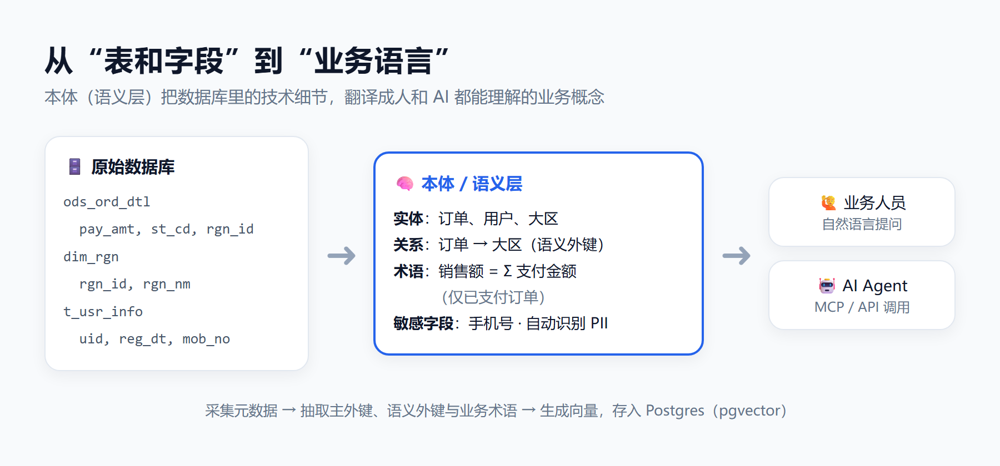
关键在于：这层本体是自动构建的。接入数据源后，系统会自动采集元数据，抽取主外键、推断“语义外键”（没有物理外键、但业务上有关联的字段），并用大模型生成术语描述、识别敏感字段，最后向量化存入 Postgres（pgvector）。
已有业务文档（词汇表、指标口径说明）？直接上传，大模型会抽取候选术语，人工确认后入库。
02 一句话问数：不只是“生成 SQL”
有了本体，问数就不再是“让大模型猜 SQL”。一个问题进来，会经过一条多阶段的 Agent 流水线：
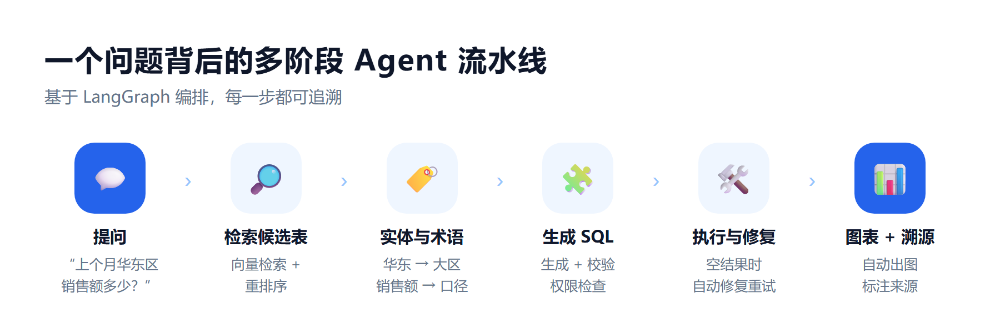
检索相关表、把“华东”“销售额”这样的词解析到具体字段和口径、生成并校验 SQL；如果查出来是空结果，还会尝试自动修复后重试。最后自动生成图表。
来看真实效果。用演示电商数据问一句“今年各下单渠道已完成订单的销售额分别是多少？”，系统直接给出图表：
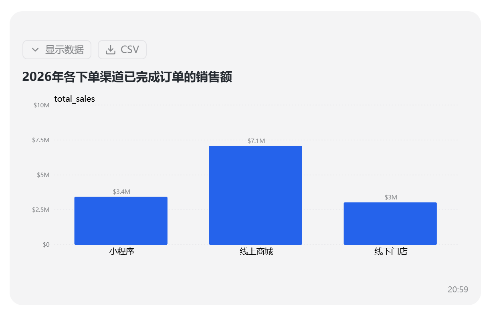
更重要的是可追溯。展开“回答依据”，能看到这次用了哪些表、哪些字段、哪些业务术语，还参考了哪条认证过的问答——数字对不对，一眼可查：
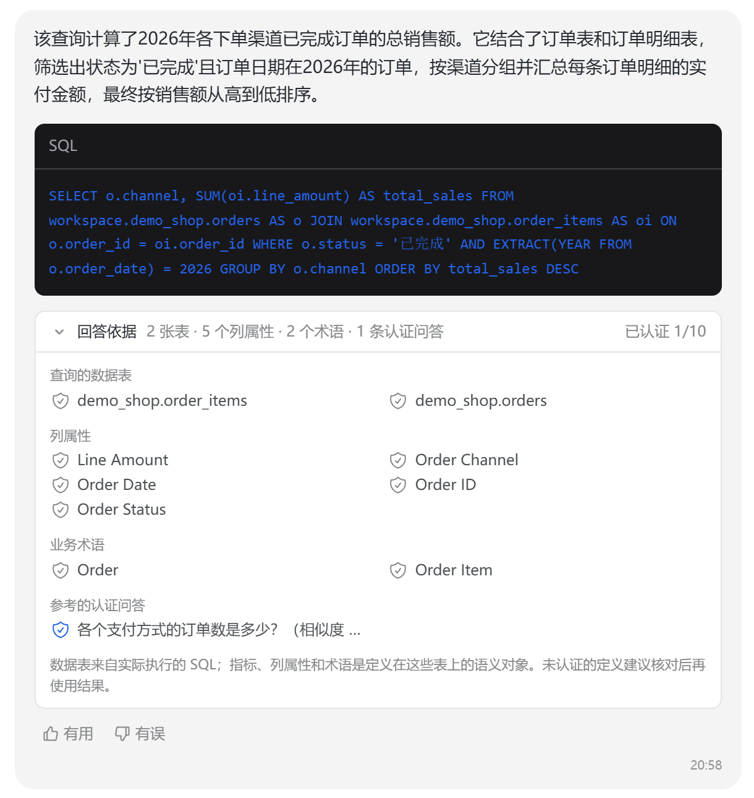
▲ SQL 与回答依据（表、字段、术语、认证问答）
还支持多轮追问。接着问一句“那只看金卡和钻石会员呢？”，系统会结合上下文理解你的意思，自动关联客户表、加上会员等级条件：
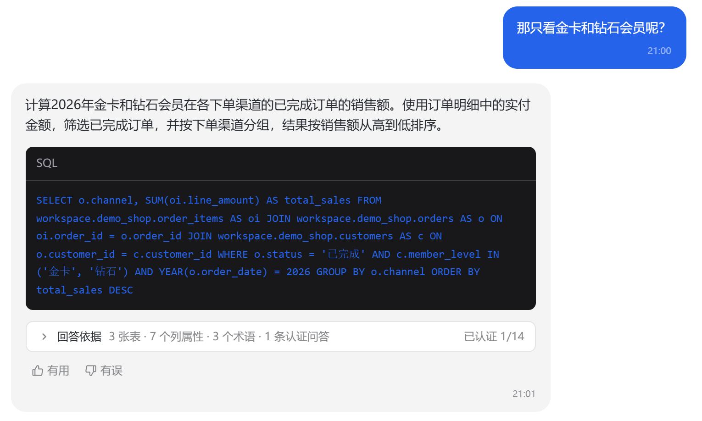
▲ 追问时自动补全上下文，生成新的 SQL
03 数据安全：AI 问数也要守规矩
企业里真正落地问数，最大的顾虑往往不是“准不准”，而是“安不安全”。销售只能看自己大区，客服不能看到完整手机号，薪资字段谁都不能碰……
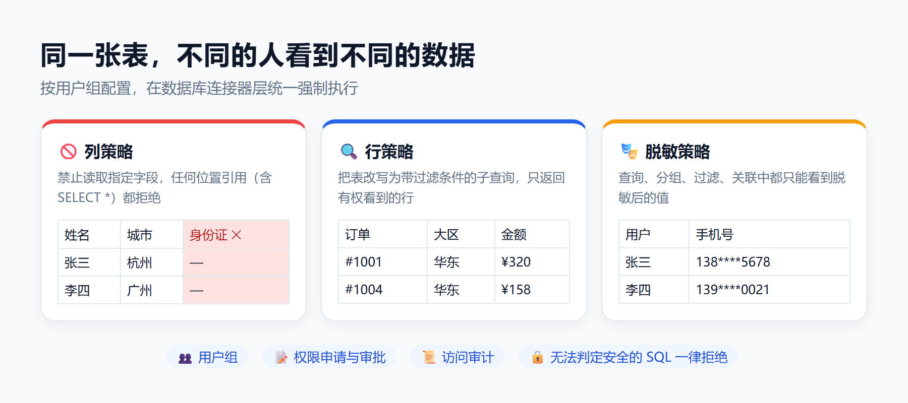
alexpan 本体按用户组配置三类策略：
- 列策略：禁止读取指定字段，哪怕写 SELECT * 也会被拦下；
- 行策略：自动把表改写为带过滤条件的子查询，只返回有权看到的行；
- 脱敏策略：无论用在查询、分组、过滤还是关联里，都只能拿到脱敏后的值。
这些策略在数据库连接器层统一强制执行，问数主查询、取值探测、空结果修复……所有 SQL 都要过这一关；无法判定是否安全的 SQL（解析失败、多语句等）一律拒绝。每一次查询都会记入访问审计。
配置起来也省事：系统会自动识别姓名、手机号这类敏感字段，点一下“一键脱敏敏感字段”就能生成脱敏策略。
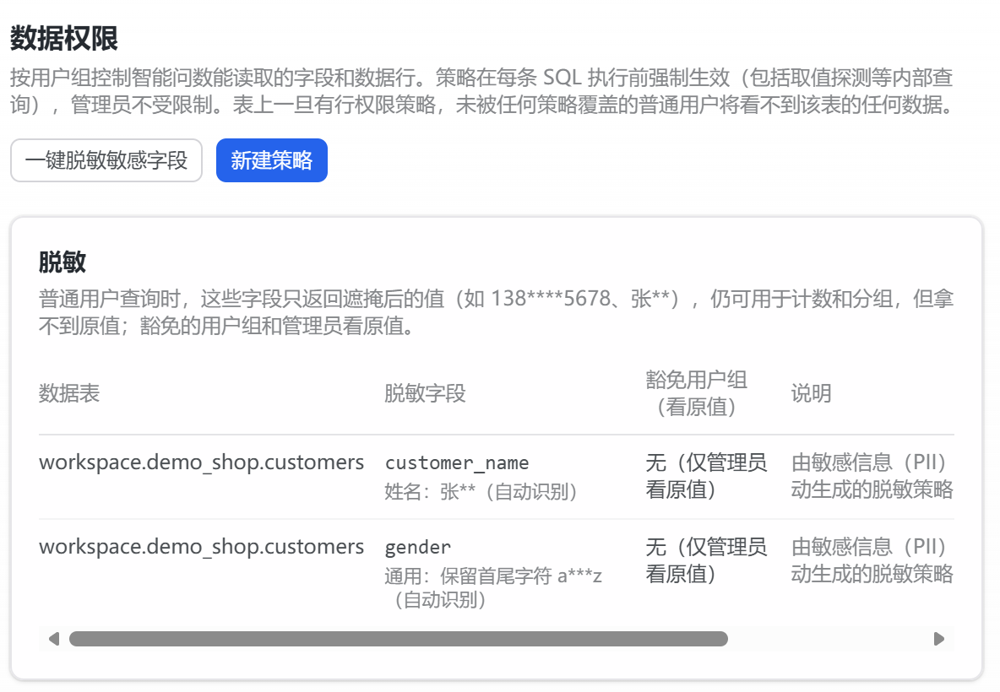
▲ 数据权限页：由敏感信息识别自动生成的脱敏策略
被拦截了怎么办？回答下方会出现“申请访问”按钮，管理员审批通过后，下一次提问即可生效。
04 不用打开系统：在钉钉 / 飞书群里问
数据最好的入口，是大家每天都在用的工作群。
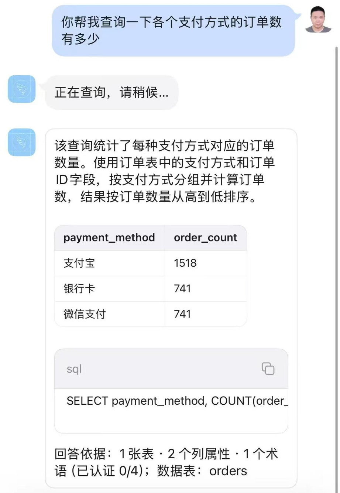
▲ 手机钉钉里直接问：结果表、SQL 和回答依据一起返回
同一个问题放到网页端问，查询结果一模一样，网页上还能展开完整 SQL、查看回答依据、给答案点“有用 / 有误”：
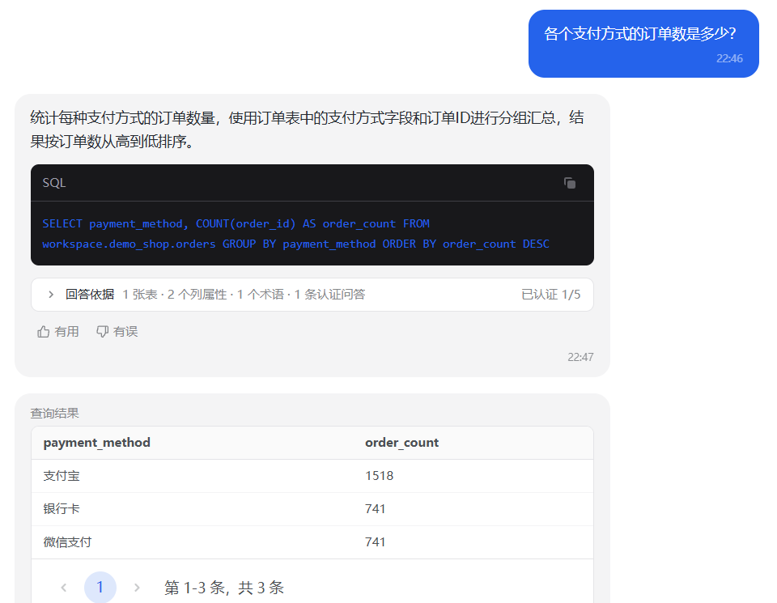
▲ 网页端：同一个问题，同样的结果
在群里 @机器人 或私聊提问即可，追问时机器人会先复述“理解为：……”，避免答非所问；发送“新问题”即可重新开始。
机器人不会直接查库，而是以提问人自己的账号身份调用问数接口——权限、脱敏、审计与网页端完全一致。机器人通过 Stream / 长连接主动连接平台，内网部署也无需公网地址。接入只要在开放平台建个应用，把 AppKey / AppSecret 填进设置页即可，页面上附有分步指引：
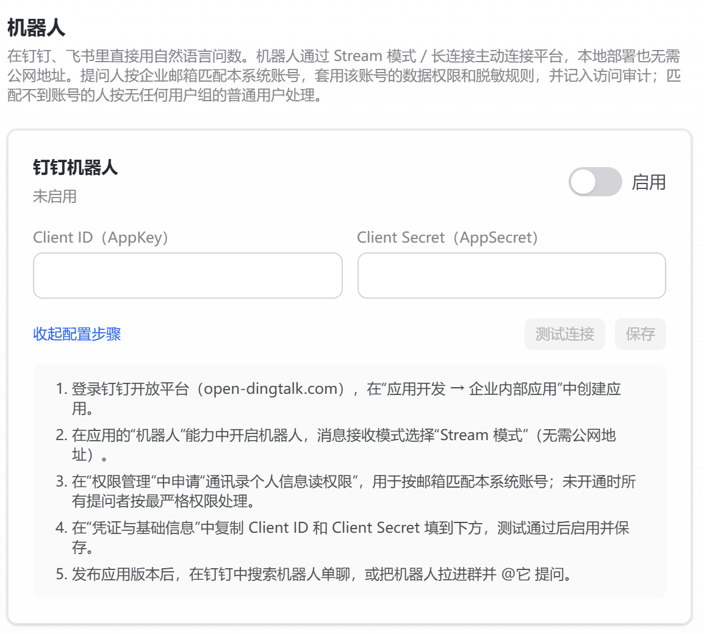
▲ 设置 → 机器人
05 从“问数”到“数来找人”
核心指标每天都要看？那就别每天问了。
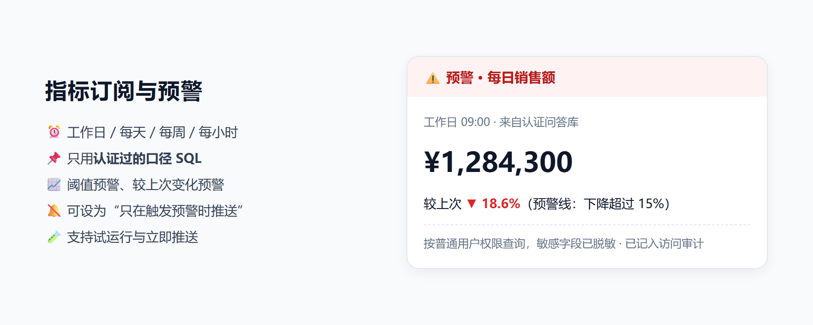
▲ 预警推送示意
从认证问答库里挑选一个口径，设置推送频率和目标群，就能定时收到数据；还可以设置阈值或“较上次变化超过 X%”的预警，并选择“只在触发预警时推送”，不打扰、不漏报。
06 越用越准：问数质量闭环
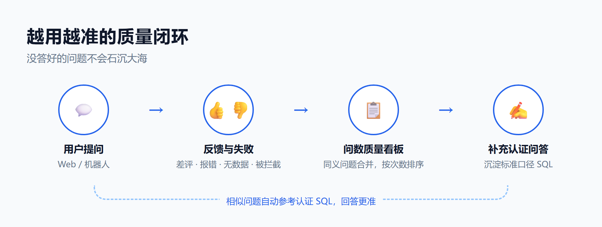
AI 不可能一开始就百分百正确。系统会把网页端和机器人里没答好的问题——被点踩的、报错的、生成不了查询的、查无数据的、被权限拦截的——统一汇总到“问数质量”看板，同一问题的不同问法自动合并，按出现次数排序。
数据同学只需针对高频问题“补充认证问答”，之后相似的问题就会参考这条认证过的 SQL。团队的数据经验，就这样一点点沉淀下来。
07 架构与部署
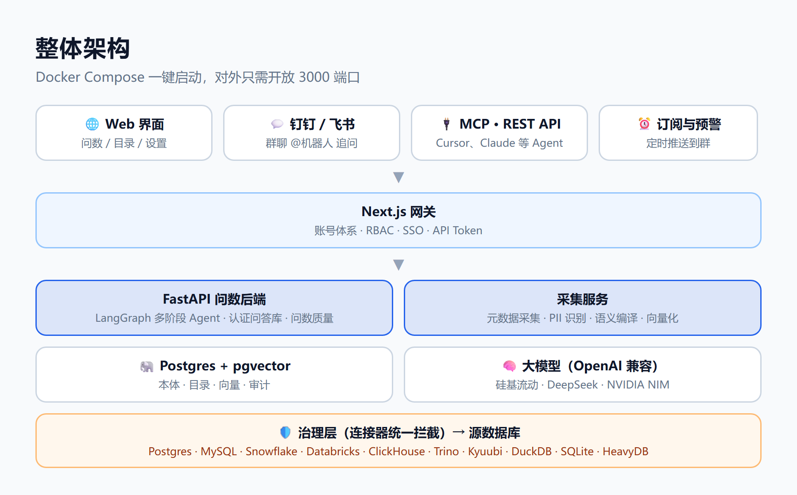
- 10 种数据源：Postgres、MySQL、Snowflake、Databricks、ClickHouse、Trino、Kyuubi、DuckDB、SQLite、HeavyDB；
- 国内模型友好：支持任意 OpenAI 兼容接口，硅基流动、DeepSeek 开箱即用，不强依赖海外服务；
- 对 AI Agent 开放：提供 REST API、MCP Server 与 Agent Skills，Cursor、Claude 等工具可以直接通过本体查数；
- 企业级账号体系：RBAC、SSO 单点登录、API Token。
部署只需要三步：
浏览器打开 localhost:3000，在“设置 → 数据连接”里接入数据源，等语义编译完成，就可以开始提问了。仓库里还附带了一份带中文注释的电商演示数据集，方便快速体验。
写在最后
alexpan 本体基于 NVIDIA 开源的 Auto Ontology 二次开发（Apache 2.0 协议），在此基础上补充了中文界面、国内模型接入、数据治理、IM 机器人、指标订阅和质量闭环等面向国内企业落地的能力。
我们相信，好的问数产品不是“一个会写 SQL 的大模型”，而是一套可信、可控、可沉淀的业务语义体系。
⭐ 项目地址
github.com/alexpan0720/ontology_auto
欢迎 Star、试用和提 Issue，也欢迎在留言区聊聊你们公司的问数痛点